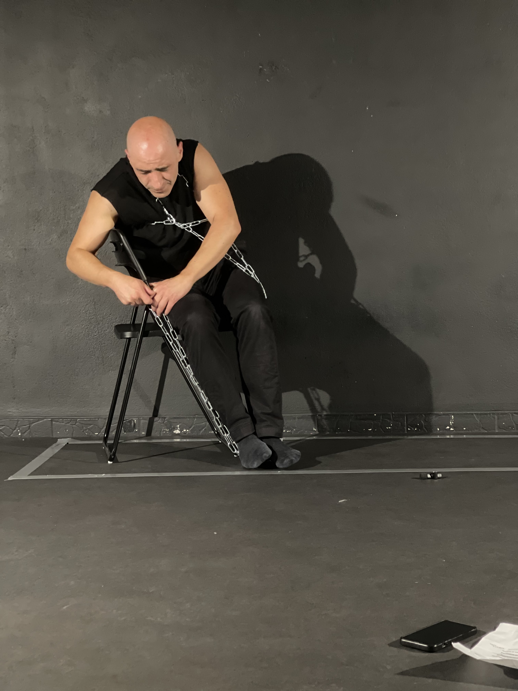
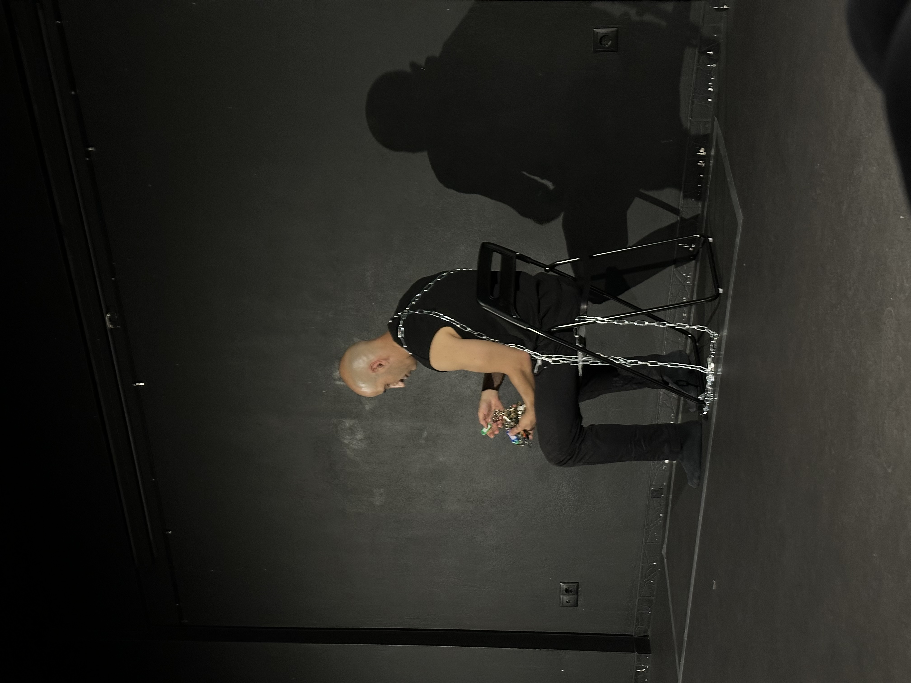

1.4 m²
Ένα σπίτι στο μέγεθος φερέτρου. Υπάρχει ήδη στην Ασία με διαφορετικές ονομασίες. Τι αξία έχει πραγματικά το να ζεις σε 1,4 τετραγωνικά μέτρα;
Το φαινόμενο των coffin house έρχεται σταδιακά να αποτελέσει μια κατάσταση κανονικότητας σύμφωνα με την οποία ο άνθρωπος πλέον χάνει το δικαίωμα να ζει αλλά μετατρέπεται σε μια μηχανή παραγωγής που στοιβάζεται και αποθηκεύεται ενώ ταυτόχρονα η ζωτική αξία ολοένα και αυξάνεται.
Η ειρωνεία φτάνει στο αποκορύφωμα όταν μπαίνει στη σύγκριση ο τάφος. Σε χώρες όπως η Ελλάδα, με τα ακριβότερα νεκροταφεία στην Ευρώπη, το κόστος αγοράς οικογενειακού τάφου ξεπερνά πολλές φορές την αξία ενός διαμερίσματος στην Αθήνα.
Οι ερωτήσεις που προκύπτουν:
- · Δουλεύουμε για να ζήσουμε ή για να αγοράσουμε τον θάνατό μας;
- · Μήπως η ζωή που ζούμε είναι ήδη ένας τάφος;
- · Πόσο πρέπει ένας άνθρωπος να εργάζεται και να αποταμιεύει ώστε να αγοράσει το απόλυτα ελάχιστο ώστε να φυτοζωεί;
- · Μήπως πλέον η ζωή έχει μετατραπεί σε έναν ζωντανό θάνατο τη στιγμή που και ο ίδιος ο συμβατικός θάνατος είναι προνόμιο;
- · Αρκούν τα 1,4 τετραγωνικά μέτρα, όχι μόνο να υπάρξεις μέσα σε αυτά αλλά ακόμα και να αναπνεύσεις;
Η performance αυτή έρχεται όχι να κρίνει ή να σχολιάσει, αλλά ρωτάει την Τεχνητή Νοημοσύνη να υπολογίσει μεγέθη χώρου και αξίες, αφήνοντας τους αριθμούς να μιλήσουν.



